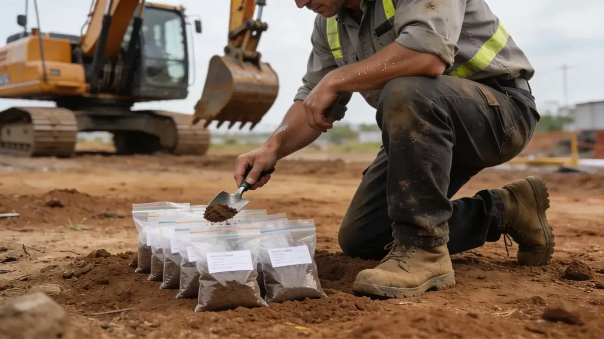
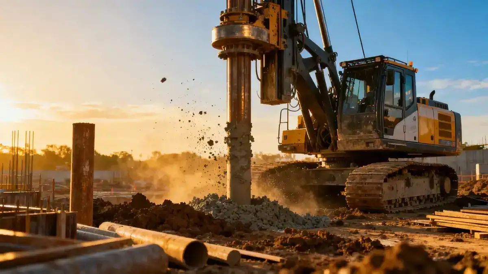

Methodology

Our approach to geotechnical engineering in North Las Vegas begins with a comprehensive review of existing geologic maps and recent nearby project data. We then execute a targeted field exploration program, typically including borings with standard penetration testing (SPT) in accordance with ASTM D1586, as well as cone penetration testing (CPT) where appropriate. Soil samples are analyzed in our soil mechanics laboratory to classify materials and determine engineering properties such as shear strength, compressibility, and expansion potential. This integrated methodology allows us to develop a robust site model that supports safe and economical foundation and earthwork designs for projects throughout North Las Vegas.
Reference Technical Parameters
| Parameter | Reference Value |
|---|---|
| Predominant soil type | Silty sands (SM) and poorly graded sands (SP) with gravel |
| Maximum seismic acceleration (PGA) | 0.2g to 0.3g (ASCE 7 Site Class D) |
| Typical groundwater level | Greater than 15 m (50 ft) below ground surface |
| Bedrock depth | Variable, typically >30 m (100 ft) or not encountered |
| Typical N60 range | 10 to 30 blows per 0.3 m in shallow sands |
Local Considerations — North Las Vegas
North Las Vegas is underlain by Quaternary alluvial deposits derived from the surrounding mountains. The soils are predominantly granular, with low to moderate plasticity fines that can exhibit collapse potential upon wetting. Shallow groundwater is generally deep (>15 m), but localized perched conditions may occur near irrigation or utility leaks. Seismic site classification per ASCE 7 typically results in Site Class D due to soil stiffness. Expansive clay layers are rare but can be encountered in localized playa deposits. Our firm has extensive experience with these conditions, providing tailored recommendations for slab-on-grade, deep foundations, and earthwork. For a broader context, see our work in geotechnical engineering in Los Angeles, where similar alluvial settings are analyzed. Additionally, our slope stability expertise applies to cut slopes in the surrounding hills.
Request a Quote
Our team reviews your project and issues an initial report at no cost.
Or write us directly at [email protected]
Services in North Las Vegas
Applicable Standards
- International Building Code (IBC) 2021
- ASCE 7-22 Minimum Design Loads and Associated Criteria for Buildings and Other Structures
- ASTM D1586 Standard Test Method for Standard Penetration Test (SPT)
- ASTM D2487 Standard Practice for Classification of Soils for Engineering Purposes (Unified Soil Classification System)
- City of North Las Vegas Municipal Code – Title 15 (Buildings and Construction)
Frequently Asked Questions
What are the typical soil conditions in North Las Vegas?
The predominant soils are silty sands and poorly graded sands with gravel from alluvial fans. These soils are generally non-expansive but may exhibit collapse potential. Groundwater is deep, typically below 15 m, and bedrock is often not encountered within standard exploration depths.
Do I need a geotechnical study for a new building in North Las Vegas?
Yes, the City of North Las Vegas requires a geotechnical investigation for most new structures, particularly those with foundations on undocumented fill or in areas of variable soil conditions. The study must comply with IBC and ASCE 7 seismic requirements.
How does seismic design affect geotechnical engineering in North Las Vegas?
North Las Vegas lies in a moderate seismic zone with PGA up to 0.3g. Geotechnical reports must provide site class (typically D) and address liquefaction potential, which is low due to deep groundwater. Foundation design must consider lateral spreading and settlement from seismic shaking.